This section shows how to open the Online Business Permit and Licensing System (eBPLS), sign in, and create a new account.
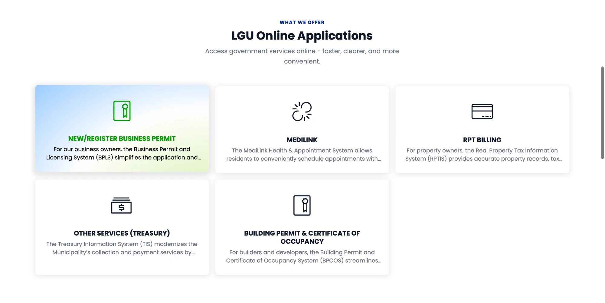
The eBPLS landing page opens. It introduces the Online Business Permit and Licensing System and highlights its main features: online application and submission, automated processing, clearance verification, real-time status updates and digital permit issuance.
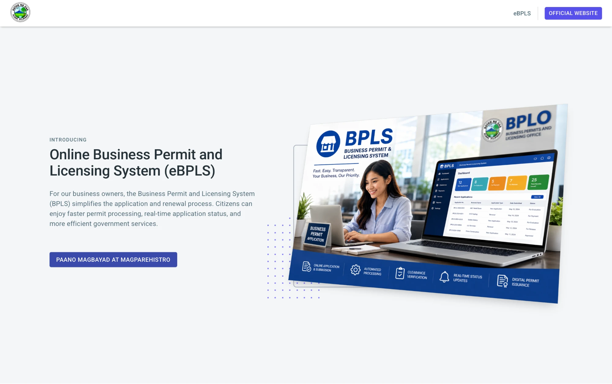
At the top right of the landing page you will see two buttons:
Click eBPLS to go to the sign-in page.
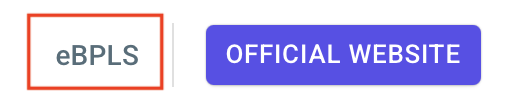
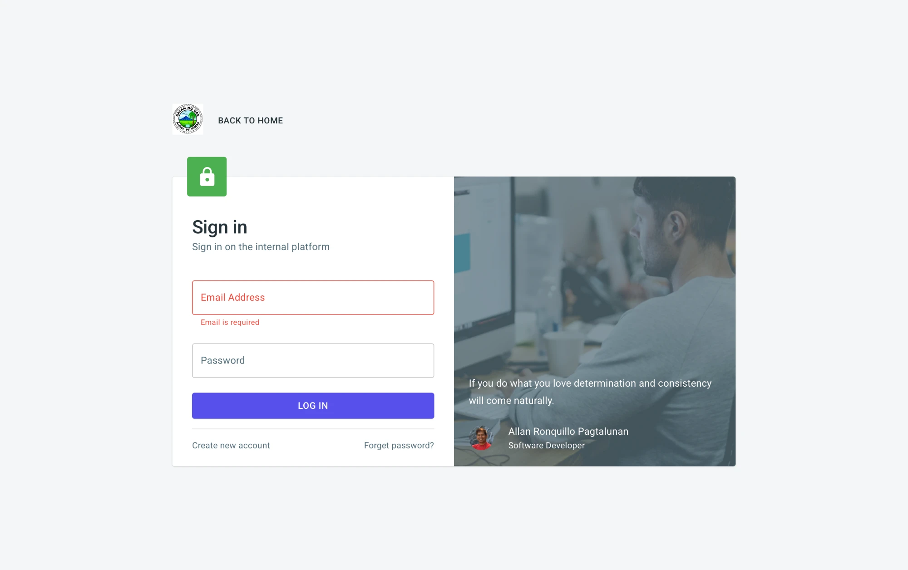
If the email or password is wrong, a red message appears below the Log In button. The message depends on which entry is wrong.
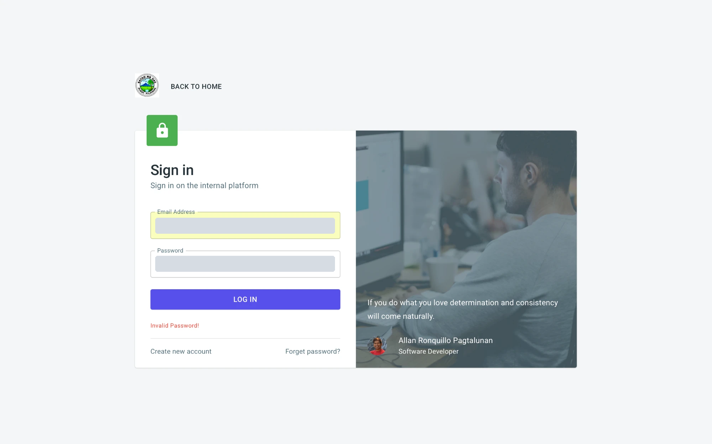
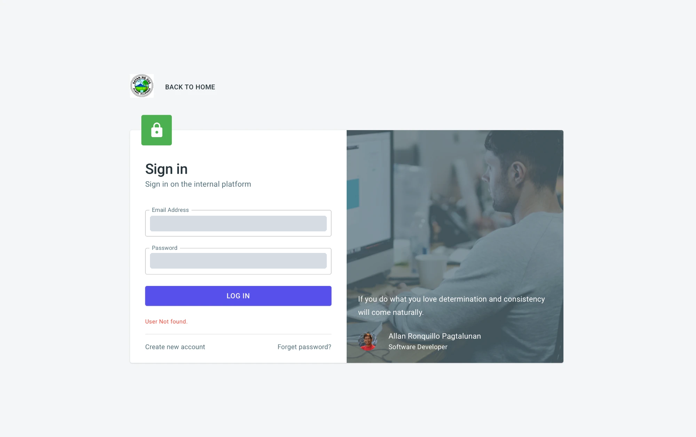
Summary of the messages:
| Message | What it means |
|---|---|
| User Not found. | No account exists for the email you typed. Check the spelling or create an account. |
| Invalid Password! | The password does not match the account. Retype it, or use Forget password? |
Other options on the Sign in page:
| Option | Use it to |
|---|---|
| Create new account | Register as a new user (see Section 2.3). |
| Forget password? | Reset a forgotten password (see Section 2.5). |
| Back to Home | Return to the OAS website. |
New users must create an account before applying. From the Sign in page, click Create new account to open the Sign up form.
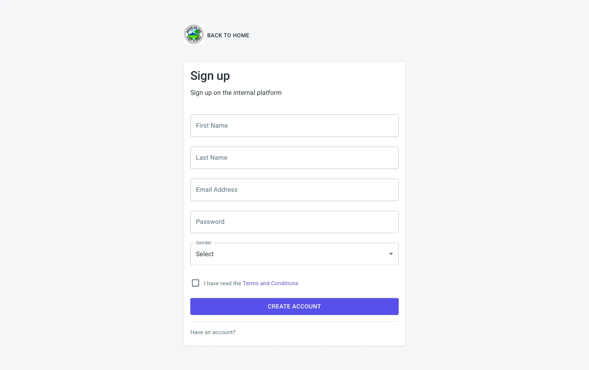
If an account already exists for the email you entered, a red message appears at the lower left when you click Create Account, and no code is sent.
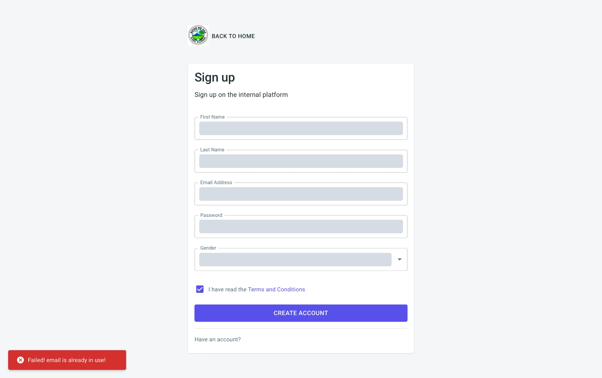
Already registered? Click Have an account? at the bottom of the form to go back to the Sign in page.
After you click Create Account, the form is replaced by a verification screen and a green message appears at the lower left: Check your email and copy the code!
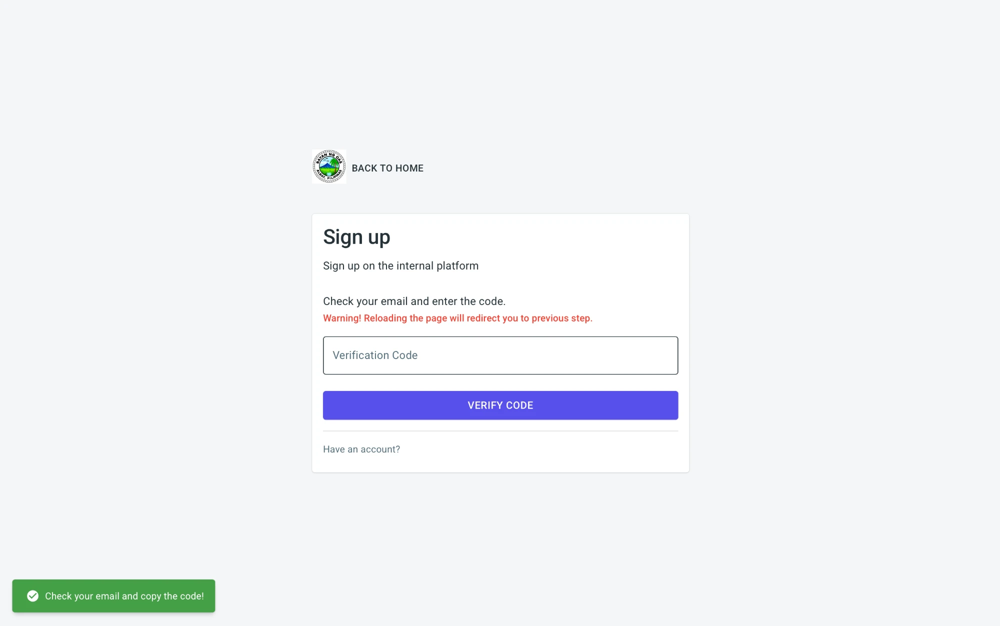
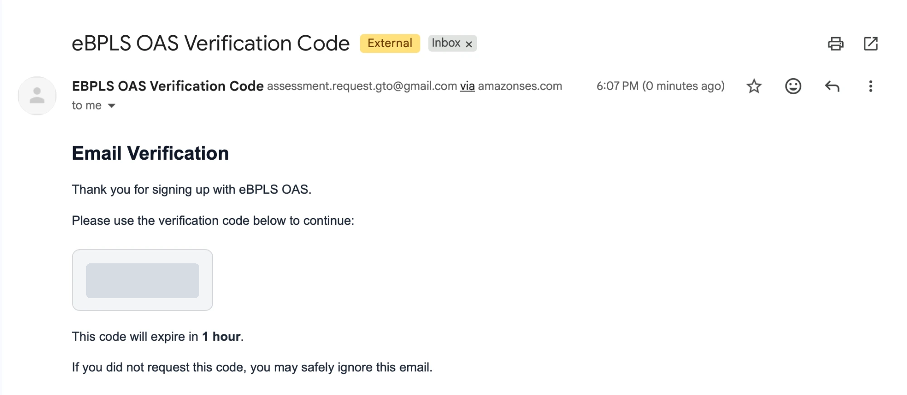
The email also says that the code expires in 1 hour. If you did not request the code, you can ignore the email.
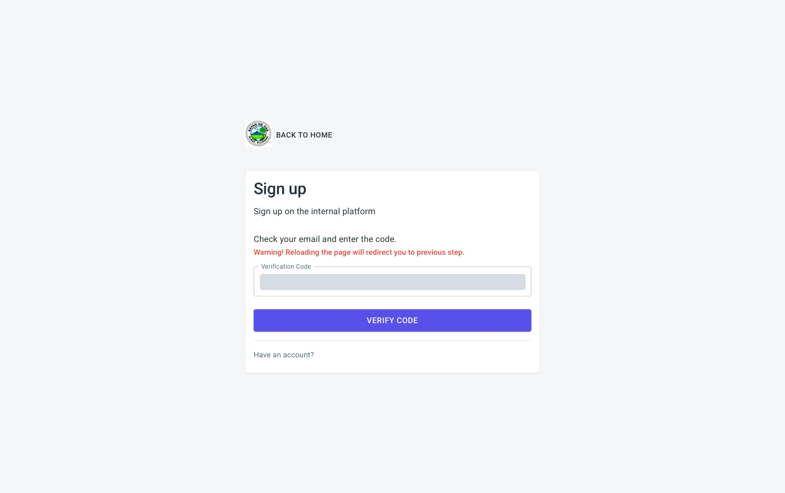
If the code is correct, you are taken to the Sign in page and a green message appears at the lower left: Registration completed! Your account is ready. Enter your email and password to sign in (see Section 2.2).
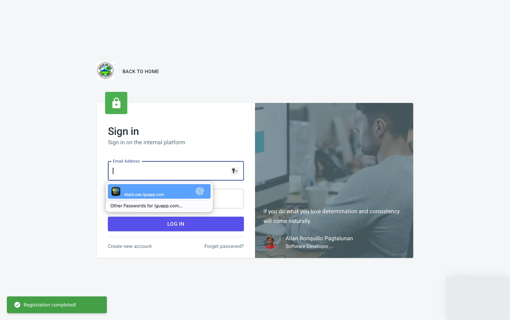
If the code you enter is incorrect, an error message appears at the lower left of the screen, as shown below. You stay on the verification screen and can try again.
| Message | What it means and what to do |
|---|---|
| Check your email and copy the code! (green) | The code was sent. Open your email and continue with the steps above. |
| Failed! email is already in use! (red) | An account already exists for this email. Go back to the Sign in page and sign in, or use Forget password? if you cannot remember the password. |
| Code is not sent. Check your internet connection. (red) | The system could not send the email. Check your connection and click Create Account again. |
| Must be a valid email / First name is required / Last name is required / Gender is required | A Sign up field is empty or incorrect. The message appears under the field. Correct it and try again. |
| Registration completed! (green) | Your account is ready. Sign in. |
If you cannot remember your password, you can set a new one using a link sent to your email.

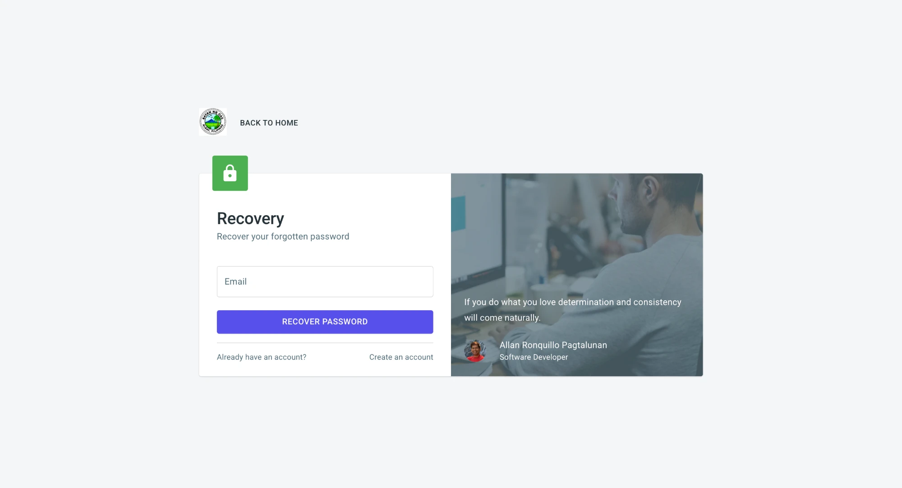
You are taken back to the Sign in page and a green message appears at the lower left: Recovery link successfully sent to your email.
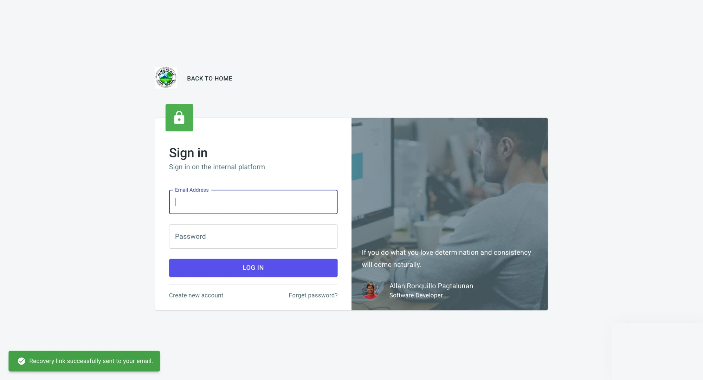
Open the email titled EBPLs Password Reset. If you do not see it, check your Spam or Junk folder. Click the Reset Password button. If the button does not work, copy the link shown in the email and paste it into your browser.
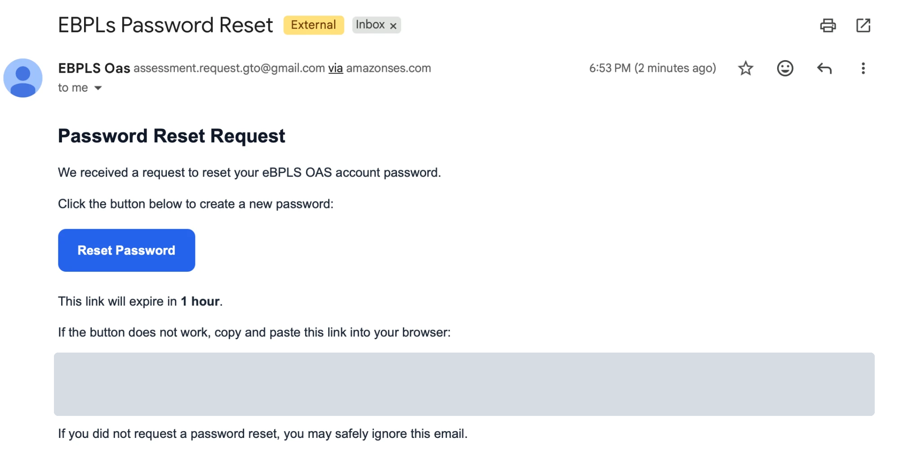
The link opens the Reset Password page in your browser.
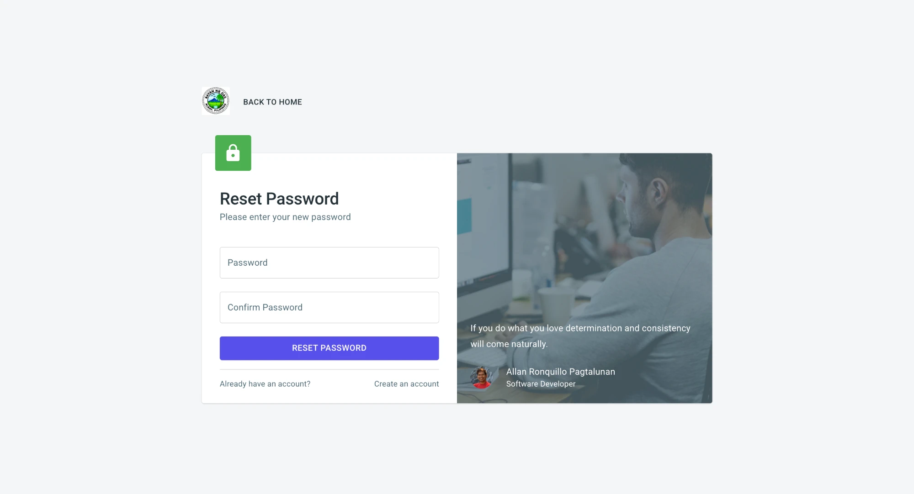
After the password is reset, you are returned to the Sign in page. Sign in with your email and the new password.
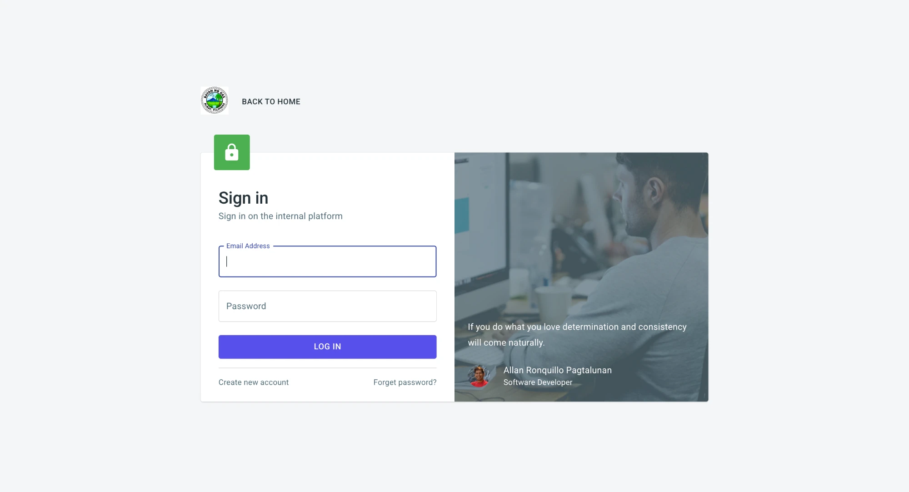
| Message | What it means and what to do |
|---|---|
| Email address is required | The Email field on the Recovery page is empty. Enter your email. |
| Email address not found. (red) | No account exists for that email. Check the spelling, or create an account. |
| Recovery link successfully sent to your email. (green) | The link was sent. Open your email. |
| Must be at least 7 characters | The new password is too short. Use 7 or more characters. |
| Passwords must match | Password and Confirm Password are different. Retype both. |
| Password Successfully Reset (green) | Your password was changed. Sign in with the new password. |
After a successful sign in, eBPLS opens the Business Holdings page. This is where the applicant's businesses are listed and managed.
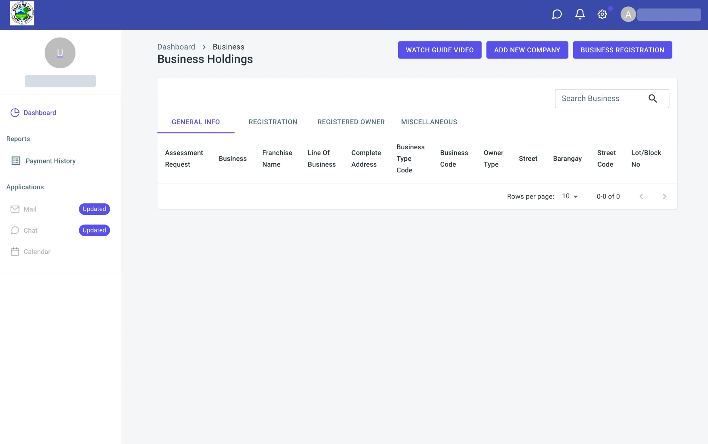
Section 3 describes this page and its menus in detail, and explains how to add or link a business and file a permit request.